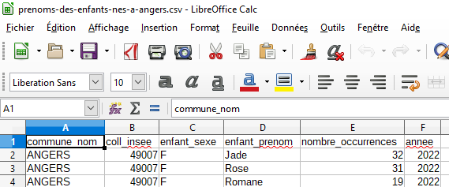
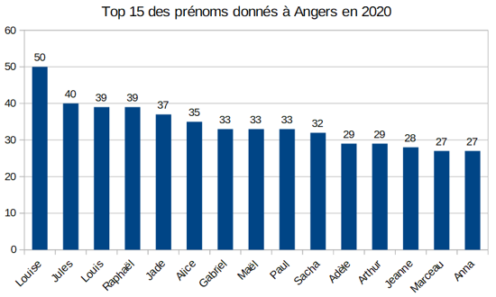

L'objectif de ce TP est d'utiliser un tableur pour trier et filtrer des données.
Source : info-mounier.fr
Le fichier ci-dessous correspond à des données ouvertes mises à disposition par la Ville d'Angers, et recense les prénoms des enfants
déclarés à Angers.
Vous devez obtenir un écran similaire à celui-ci-dessous.

Sélectionner la première ligne (en cliquant sur le "1" sur fond gris tout à gauche) et activer l'autofiltre dans "données"
Créez un nouvel onglet dans lequel vous écrirez la réponse aux questions posées (sans oublier de mentionner le numéro de la question)
Répondre aux questions suivantes, sans oublier d’annuler tous les filtres et tris avant de commencer chaque question.
Filtrez les données de manière à afficher uniquement les prénoms de l’année 2023. Quel est le dernier prénom affiché ?
Filtrez les données de manière à n’afficher que les filles dont le prénom a été donné exactement 10 fois en 2023. Quels sont les prénoms de ce filtre ?
Filtrez les données pour n’afficher que les prénoms de l’année 2013 puis triez ces prénoms du plus donné au moins donné (par nombre d’occurrence décroissant). Quels sont les 3 prénoms les plus donnés en 2013 ? Même question pour 2023.
On souhaite afficher à l’écran uniquement les prénoms féminins commençant par la lettre « C », triés par ordre alphabétique, qui ont été donnés plus de 20 fois entre 2019 et 2022. Quels sont ces prénoms ?
Filtrez les données pour afficher uniquement les données sur le prénom « Théo ». Triez ensuite le résultat par années croissantes et affichez un diagramme en bâtons permettant de visualiser graphiquement l’évolution du nombre d’occurrences de ce prénom. Avant de faire le graphique, copier-coller les cellules pour que les colonnes soient dans le bon ordre.
Faites-en de même avec votre prénom si celui-ci est présent dans les données, sinon avec le prénom d’un de vos camarades.
En utilisant les outils de filtre et de tri, réalisez le diagramme du Top 15 des prénoms donnés en 2023 à Angers. Vous devez obtenir un diagramme similaire à celui ci-dessous (qui correspond à l'année 2020)

Rendre le fichier dans le cahier de texte "devoirs à faire" du jour